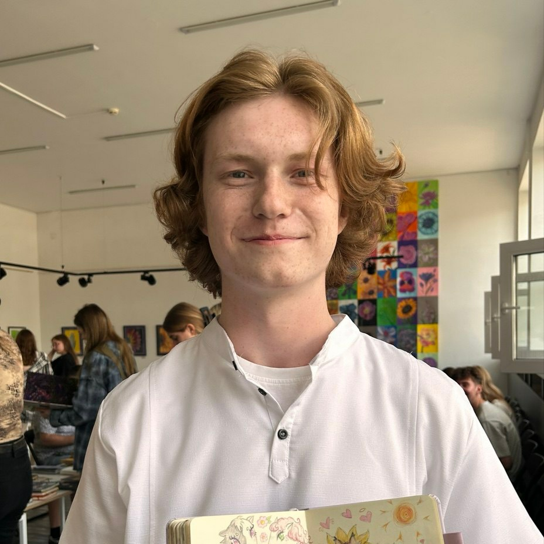

Ihar Salahub
Contacts:

Phone:+375292165303
Discord:anth0cyan
Telegram:anth0cyan
About me:
22 year old man, currently a Rolling Scopes School student.
My goal is to become a web developer and to work on websites
and projects associated with web development.
Skills:
Working with Git and Github on a basic level
Know the basics of markdown
I'm a quick learner
B1 to B2 level of English proficiency (according to efset.org)
experienced in working in stress environment
have experience working with difficult people and clients in general
Experience:
Seller (2024 - 2025)
-
A lot of experience working with people
and in stressful environment as well as maintaining
durability to work for a long time
Sales floor manager (2025 - 2026)
- Gained experience managing the work of group of people
and skills to carefully and calmly resolve conflicts
with clients and within the work team
Projects and code examples:
My CV
Codevars kata solved
function multiply(a, b){
return a * b
}